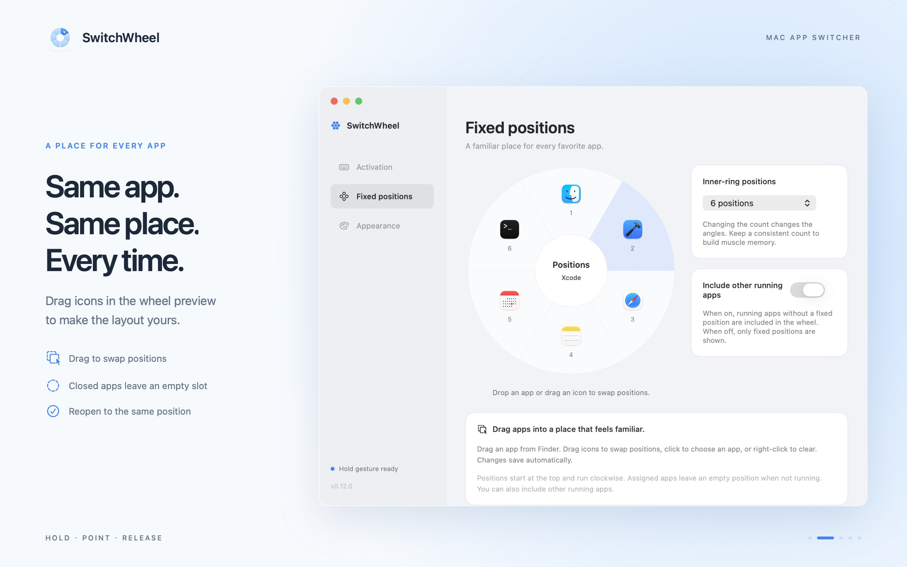

Get started
- Start in the menu barLaunch SwitchWheel and follow the welcome screens. The app lives in the menu bar at the top of your Mac and has no Dock icon.
- Hold left ControlA fresh installation uses left Control ⌃ by default. Hold for about 0.15 seconds, point to a running app, then release to switch. Existing installations keep your previously selected trigger.
- Choose your own gestureIn Settings → Activation, choose left Option, Command, or Shift. You can also record a keyboard shortcut, open the wheel, and click an app.
Fixed positions
Give your favorite apps a familiar direction. Open Settings → Fixed positions and arrange icons directly in the wheel preview.
- Drag an app in from Finder, or click a position to choose an app. Drag existing icons to swap positions.
- Choose 4, 6, 8, 10, or 12 inner-ring positions. Set the count to 0 to turn fixed positions off.
- A fixed app that is not running leaves an empty position. Launch it first; SwitchWheel switches between running apps.
- Turn off “Include other running apps” to use only assigned apps. Turn it on to add other running apps in the outer rings.

Example of fixed positions and drag-to-arrange settings. Outer rings adapt to the number of other running apps.
Permissions & control
Input Monitoring
Hold mode needs Input Monitoring to detect the activation key and cancel gestures. Open System Settings → Privacy & Security → Input Monitoring and allow SwitchWheel. Quit and reopen the app if macOS asks you to.
You can revoke this permission at any time. The menu bar and recorded keyboard shortcut mode work without Input Monitoring.
Selecting fixed apps
The sandbox retains read-only access to apps you select, to read app information and icons. Security-scoped bookmarks restore this access after relaunch.
The app does not request Screen Recording or Accessibility permission. Read our privacy policy for details about data handling.
Common questions
Why does holding the key do nothing?
Hold the left-hand key selected in Settings for about 0.15 seconds; a tap or the right-hand key will not activate the wheel. Check Input Monitoring. A change of installation path or signing identity may require granting permission again. Quit from the menu bar and reopen SwitchWheel, making sure only one version is running.
Why did selecting an app not switch to it?
In hold mode, keep the key pressed, move onto a valid app icon, then release. The center, outside of the wheel, and empty positions cancel the gesture. When using a recorded shortcut or the menu bar, click the icon to switch.
Why is there an empty position?
A fixed app keeps its position when it is not running. Launch that app to make it available there. If you use only fixed apps, also check that apps are assigned to the positions.
Can I select individual windows of the same app?
SwitchWheel switches apps, with one entry per app. This version does not choose individual windows or show window previews.
Does it replace Cmd+Tab?
It does not change the system Cmd+Tab binding. You can use SwitchWheel alongside the macOS app switcher.
How do I change the theme or quit?
Open Settings → Appearance from the menu bar and choose a light or dark wheel. To quit, choose Quit from the SwitchWheel menu bar menu.
Who handles purchases, refunds, and updates?
Apple handles purchases, refunds, and updates through the App Store. Request a refund at Apple’s Report a Problem page. For app features or bugs, use the support links below.
Contact & feedback
Developed and maintained by YE JINMIAN. For help, bug reports, suggestions, or privacy questions, open an issue in our public support repository. English and Simplified Chinese are welcome.
Include your macOS version, app version, activation mode, steps to reproduce, and expected result. Hide private information before attaching screenshots.